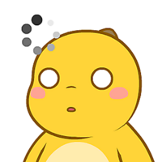

写实人像桌面宠物，会自己走动、跟随鼠标、右键菜单喂饭，支持双屏与明暗主题。下载暂未开放，源码已开源。
安卓悬浮窗连招工具，录制触屏手势后可循环回放。基于 Accessibility Service 实现，免 Root，不改动系统。
面向初一学生的信息技术教学演示，把爬虫抓取、建立索引到结果排序的整个过程一步步讲清楚。
网页小游戏：屏幕变绿就出手，5 轮测出真实反应速度。第 3 轮起还有黄色假灯陷阱，最高纪录保存在本地。
经典街机重制：方向键或手指滑动都能玩，吃满屏拿金豆，还能开穿墙模式。画面跟随深浅主题自动变色。

奶龙表情包大举入侵你的屏幕！点一只驱逐一只，它们会越来越多越来越快。29 只官方贴纸奶龙等你清场。